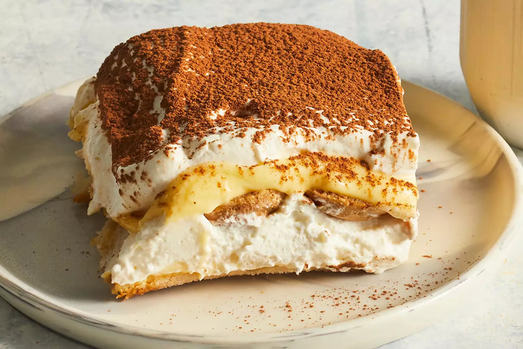

Tiramisu

Description
voured Italian dessert. It is made of ladyfingers (savoiardi) dipped in coffee,
layered with a whipped mixture of eggs, sugar, and mascarpone cheese, flavoured
with cocoa. The recipe has been adapted into many varieties of cakes and other
desserts.[2] Its origins are often disputed among Italian regions Veneto and
Friuli Venezia Giulia.
This tiramisu recipe shows you how to make the classic Italian layered dessert
at home with rum-flavored, coffee-soaked ladyfingers, a creamy mascarpone custard,
and whipped cream. The top of this tiramisu is dusted with cocoa powder for an impressive
no-bake dessert.
Ingredients
- Egg Yolks
- Sugar
- Milk
- Cream
- Vanilla
- Mascarpone
- Coffee
- Ladyfingers
- Cocoa Powder
Steps
- Whisk together egg yolks and sugar in a medium saucepan until well blended. Whisk in milk and cook over medium heat, stirring constantly, until mixture comes to a boil.
- Boil gently for 1 minute, then remove from the heat and allow to cool slightly.
- Cover tightly and chill in the refrigerator for 1 hour.
- Beat cream and vanilla in a medium bowl with an electric mixer until stiff peaks form.
- Remove egg yolk mixture from the refrigerator; add mascarpone cheese and whisk until smooth.
- Combine coffee and rum in a small bowl. Split ladyfingers in half lengthwise and drizzle with the coffee mixture.
- Arrange 1/2 of the soaked ladyfingers in the bottom of a 7x11-inch dish. Spread 1/2 of the mascarpone mixture over the ladyfingers, then spread 1/2 of the whipped cream over top. Repeat layers once more. Sprinkle cocoa powder over top.
- Cover and refrigerate until set, 4 to 6 hours.
Source: Allrecipes